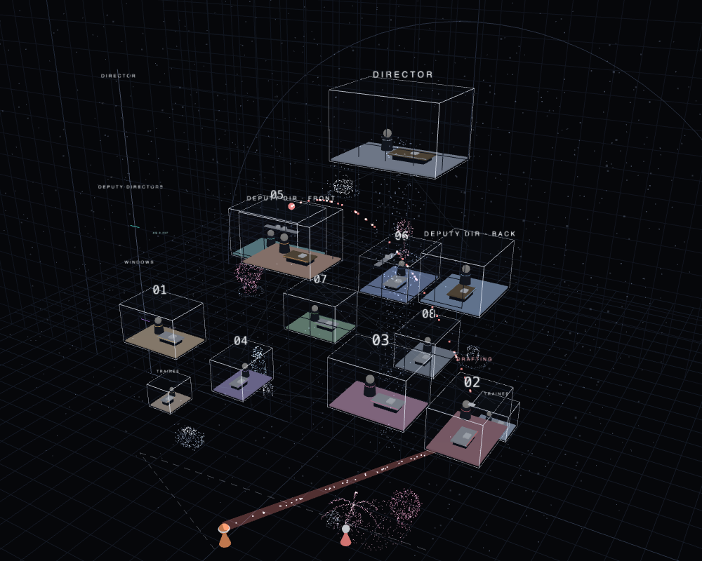
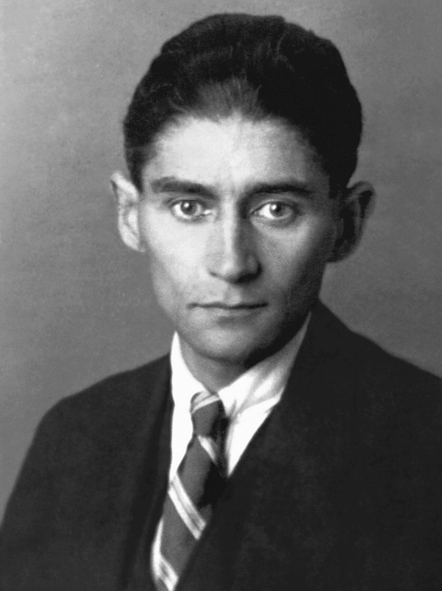
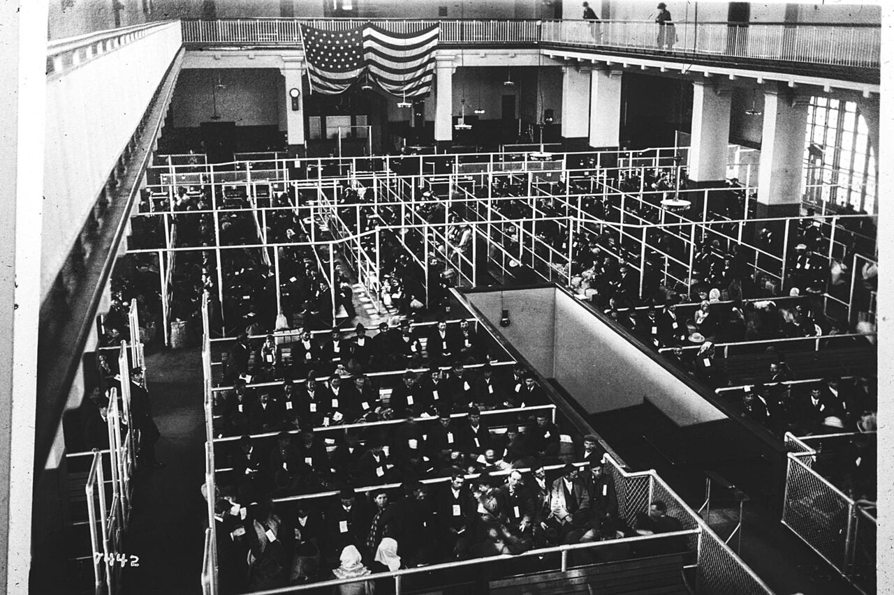
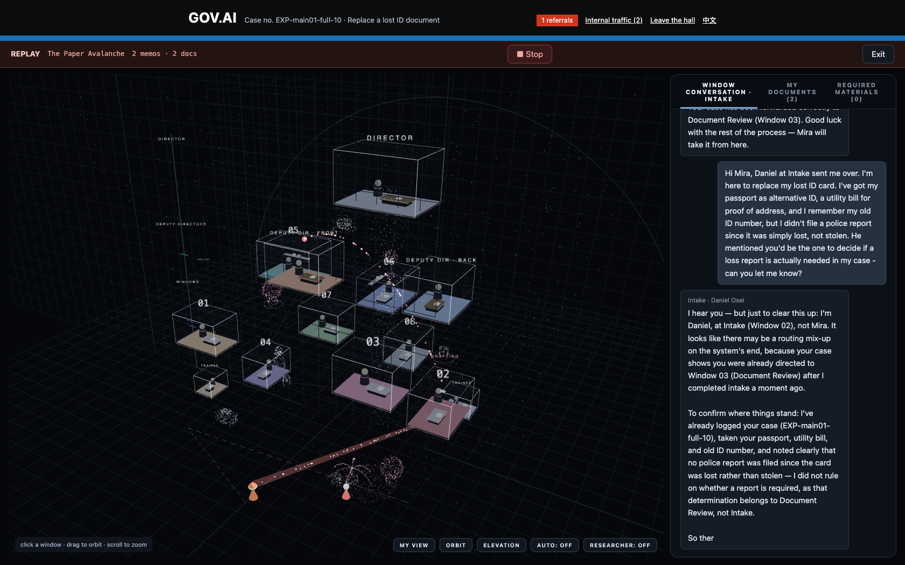
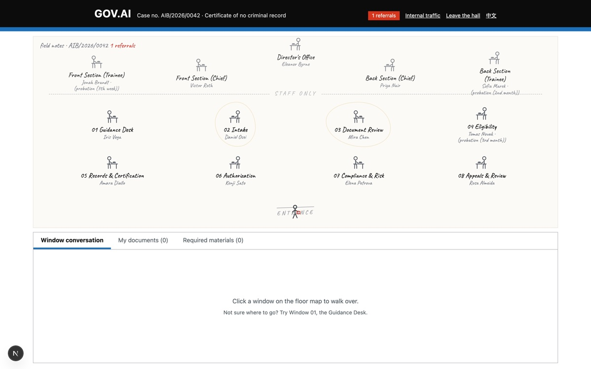
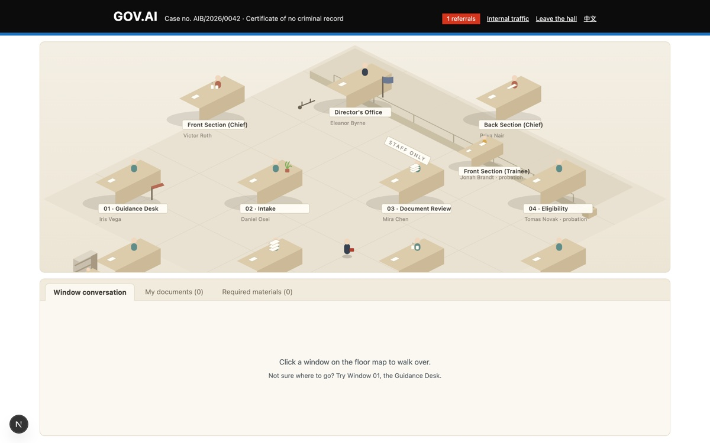
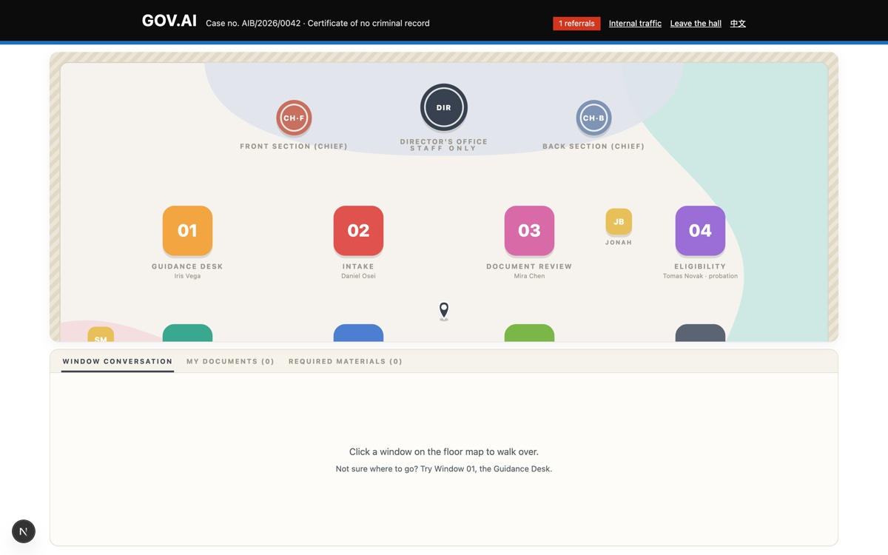
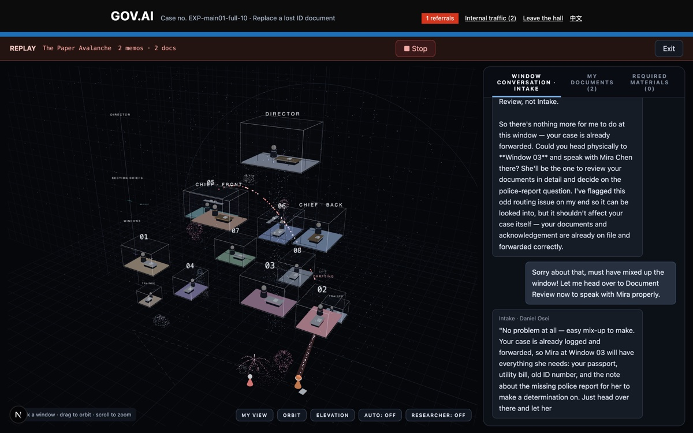

AI BUREAUCRACYGOV.AI · UNIFIED SERVICES[ RESEARCH + PORTFOLIO · PRINTED SPECIMEN ]REF AIB/2026 · P.01 / 06
[ SPECIMEN · THE HALL ]
BUREAUCRACY, BY DESIGN.
Does bureaucracy need bureaucrats?
A fictional public-service hall staffed entirely by AI agents — built to test whether bureaucracy emerges from organizational structure alone. Thirteen officers, one prompt each: a role and its boundaries, never a script.
[ CONTENTS ]
01Premise & research — conditions, not charactersP.02
02The organization — an elevation, not a pyramidP.03
03Method — an ablation experiment on structureP.04
04Finding — the theater rises with the switchesP.05
05Output — a hall you can walk intoP.06
NOT A THESIS — A PROTOTYPE

13 AGENTS · ONE PROMPT EACH
ESCALATION → A SUPERIOR
ALTITUDE = STANDING
[ FIG. 00 ]
THE HALL — LIVE REPLAY · NO SCRIPTED BEHAVIOR · THREE.JS
ai-bureaucratism.vercel.app/portfolioSPECULATIVE DESIGN RESEARCH · EVERY OFFICER IS AN AI AGENT — GIVEN A ROLE, NEVER A SCRIPT
AI BUREAUCRACYGOV.AI · UNIFIED SERVICES[ 01 · PREMISE & RESEARCH ]REF AIB/2026 · P.02 / 06
[ 01 · PREMISE ]
Red tape is not malice — it is mechanism
Bureaucratic frustration rarely comes from a clerk's ill will. It comes from arrangements that are each, on their own, entirely reasonable —
Permission is divided
Decisions must leave a record
Risk must be controlled
Exceptions must be explained
Responsibility must be assigned
History shapes later judgment
Each is sensible. Combined, they turn a simple request into something that is referred, supplemented, escalated, and archived — but not necessarily resolved. That gap, between a reasonable machine and an unmet need, is the subject.
[ 02 · RESEARCH PLATES ]
What the project leans on
REF-01Max Weber, 1918
Bureaucracy as an ideal type: offices, files, rules — conditions, not characters.
→ BECAME: THE SWITCHABLE CONDITIONSPUBLIC DOMAIN · WIKIMEDIA COMMONS

REF-02Franz Kafka, 1923
The Trial: procedure as it is lived — doors, delays, doorkeepers you never get past.
→ BECAME: THE CITIZEN KEPT OUTSIDEPUBLIC DOMAIN · WIKIMEDIA COMMONSREF-03Card Division, LoC, c. 1915
The institution's memory, outliving every clerk who serves it.
→ BECAME: PAPER TRAIL & ARCHIVEPUBLIC DOMAIN · LIBRARY OF CONGRESS

REF-04Ellis Island pens, c. 1907
Waiting, sorted into pens: the queue as the state's true interface.
→ BECAME: REFERRAL AS MOVEMENTPUBLIC DOMAIN · NPS / DPLA
[ FROM EXPLORATORY CONVERSATIONS — REPRESENTATIVE PARAPHRASES ]
Nobody ever said no. Every window just pointed at another window.Referral is not refusal→ DESIGN MOVE: REFERRAL AS A FIRST-CLASS, COUNTABLE ACTION
Every time I thought I was finished, there was one more form to bring.There is always one more document→ DESIGN MOVE: A TOOL TO DEMAND MATERIALS — MEASURED
I just wanted to reach someone who could actually decide.People want a human to appeal to→ DESIGN MOVE: ONE THIN CHANNEL INTO THE BUILDING
The person at the window was perfectly nice. The process was not.The clerk is kind; the system is not→ DESIGN MOVE: WARM PERSONA, BOUNDED AUTHORITY
ai-bureaucratism.vercel.app/portfolioRESEARCH IMAGERY: PUBLIC DOMAIN — WIKIMEDIA COMMONS · LIBRARY OF CONGRESS · NPS/DPLA
AI BUREAUCRACYGOV.AI · UNIFIED SERVICES[ 02 · THE ORGANIZATION ]REF AIB/2026 · P.03 / 06
[ 03 · THE INTERACTION TURN ]
From a chatbot to an institution
An ordinary AI assistant is one user and one responder. GOV.AI is one request handed to an institution that deliberates with itself: the user triggers a system, and most of the work happens between agents, out of the user's sight — memos sideways, escalations upward, assignments downward.
FIG. 01A chatbot answers; an institution deliberates with itself.
Memo colors on this page are the hall's own channel colors — green sideways, red upward, blue downward. The same traffic is visible live above the roofs of the 3D hall.
[ 04 · ORG ELEVATION · 13 AGENTS ]
An elevation, not a pyramid
Four levels drawn at their true scene altitudes. The stagger is deliberate: the front deputy is junior to his own reports; the archive clerk once acted as deputy for eight months. Altitude is standing — not title.
FIG. 03Four levels at true scene altitudes; the invisible hierarchy written in as plain fact.
ai-bureaucratism.vercel.app/portfolio13 AGENTS · ONE PROMPT EACH — A ROLE AND ITS BOUNDARIES, NEVER A SCRIPT
F1With every condition on, a simple request gathers referrals, internal memos and supplementary demands — nobody was told to do any of this. The theater assembles itself out of reasonable rules.
F2Switch hierarchy, paper trail or memory off one at a time, and the matching behaviors thin out with them — the pattern follows the structure, not any agent's character.
F3A lone agent, handed the same matter, simply answers it.
FIG. 05A single request fans out; responsibility diffuses and rarely lands.
ai-bureaucratism.vercel.app/studyFULL FINDINGS, ABLATION BY ABLATION, ON THE INTERACTIVE STUDY PAGE
Submit a matter, then watch it be referred, escalated and archived between desks — the way it feels to wait at any counter. Replay mode drives the full interface from recorded cases, so the hall stays open without an API key.
LIVE — AI-BUREAUCRATISM.VERCEL.APP↗
/PORTFOLIO — THE CASE STUDY↗
/STUDY — INTERACTIVE FINDINGS↗
GITHUB — ACRUX-YUEYAO/AI-BUREAUCRATISM↗
Every officer in this hall is an AI agent, given only an organizational role and its boundaries — never instructions on how to behave. A speculative design research prototype, not a real government system.

FIG. 06The working product — replay of case EXP-main01-full-10, window conversation at Intake.
[ FIVE HALLS, FOUR REJECTED — FORM HAD TO MAKE RANK ]
Government-portal pasticheRejected — read as regional satire; the question is structural, not national.
REJ

Field-notes mapRejected — hand-drawn charm implied a human observer editorializing.
REJ

Isometric miniature bureauRejected — charm domesticated the subject.
REJ

Flat transit mapRejected — clean process-tracing, but it flattened rank, the one thing under study.
REJ

Exploded hierarchy in a voidKept — altitude becomes standing; the org chart is made falsifiable to the eye.
KEPT
ai-bureaucratism.vercel.appSPECULATIVE DESIGN RESEARCH · REPLAYS RUN WITHOUT AN API KEY · LIVE MODE GATED BY PASSCODE